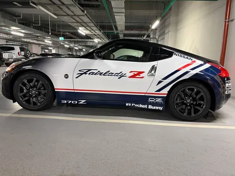
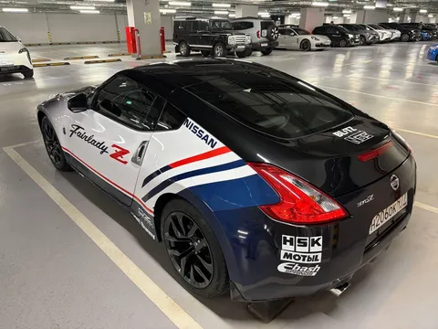
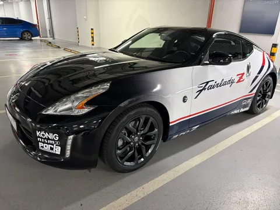
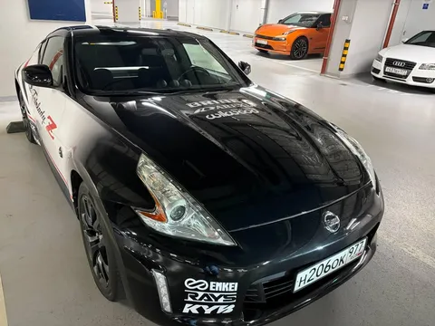

Нет сил ждать - покажу вам незавершенный, но уже близкий к финальному вариант оклейки. Леди приоделась - был придуман, отрисован, распечатан и оклеен вариант ливреи в стилистике retro jdm.
Занимательный факт - в создании этого дизайна принимали участие нейросети. Когда я пришел в студию детейлинга и обрисовал на пальцах мои пожелания, ребята уже через пару дней выкатили мне вариантов 20 самых разных дизайнов, треть из которых были очень даже ничего. Я, конечно, удивился такой прыти, но виду не подал. А вот оно что, оказывается - все они были нарисованы нейронками! Штош, для пристрелочного отбора пойдет.
Выбрал я, значит, один из вариантов, ребята пошли к настоящему дизайнеру, который уже нормально это все отрисует для настоящего макета под печать на виниле. Конечно же, дизайнер не станет перерисовывать ИИ-шную картинку в лоб, он обязательно добвавит свое авторское видение. И каково же было мое удивление, когда первые 4 итерации работы дизайнера нравились мне меньше, чем ИИ-шный исходник! Притом дизайнер-то хороший, и решения его понятны, но все равно не то. Лишь с пятой попытки получилось то, что надо. И, кстати, в некоторых деталях - то, до чего нейронка не догадалась.
По-моему, получилось отлично. Еще будет переделываться задний бампер, там с градиентом напутали немного, но это абсолютно рабочий момент. Быстро только кошки родятся. И впереди еще одно лютейшее изменение в облике машины, которое надеюсь показать через полторы-две недели. А по технике там и так полный порядок, "зетка валит и рулится" (с) Аркадий.



